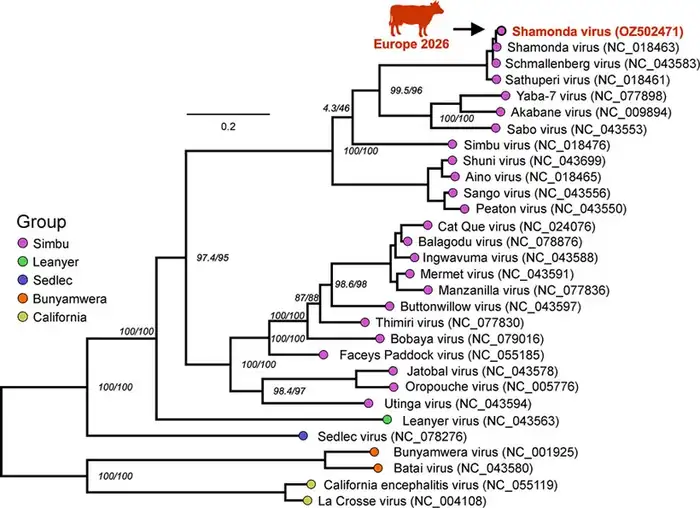

The three hypotheses
Virus-first. Viruses, or virus-like replicons, existed before cells and contributed to the RNA world. The problem: viruses need hosts to replicate, so a world of only viruses is hard to sustain.
Maps, diagrams and images


Regressive. Viruses are degenerate cells that lost the machinery of life — the way some parasites do. The problem: the largest viruses (mimiviruses) have genes no cell would need to lose, and their genomes do not look like reduced cells.
Escaped genes. Viruses are fragments of cellular genomes that acquired a capsid and the ability to move between cells. The problem: this explains plasmids and transposons well, and giant viruses badly.
What the data say
Comparative genomics finds viral genes with no cellular homologues — the 'viral hallmark genes' — which supports deep viral ancestry for at least some lineages. It also finds clear cases of recent escape, which supports the third hypothesis for others.
The most likely answer is that all three happened, at different times and for different virus families. That is unsatisfying as a slogan and probably correct as biology.
The 'are viruses alive?' argument is semantic. What matters scientifically is whether viruses have a single origin, several origins, or are a polyphyletic collection of mobile genetic elements — and the evidence currently favours the last.
Giant viruses complicate the picture further: their size and gene content blur the line between virus and cell, and their discovery revived the regressive hypothesis in a form that is still being tested.
The stakes
Origins research matters for surveillance: knowing which viral families have ancient, stable relationships with hosts predicts which are likely to jump. It also reframes the tree of life — viruses are not a branch on it so much as a network across it.
The honest label is 'live debate'. Unlike the archive's fringe material, the disagreement is between working virologists with the same sequence databases.
Sources for this page
- Wikipedia, “Virus” — origins and classificationen.wikipedia.org
- Koonin, Dolja & Krupovic, on the ancient virus worldwww.nature.com
- Wikipedia, “Giant virus” — mimivirus and the regressive hypothesisen.wikipedia.org
- ICTV, virus taxonomy reportsictv.global
Open resources on this topic
- PapersOpen-access articles: DOAJ · PubMed Central · Internet Archive Scholar
- BooksPublic-domain and borrowable copies: Open Library · Project Gutenberg · Google Books · Internet Archive
More images
Cite this page
Momin, S. (2026). Where Viruses Came From. The Larger World Archive. https://drsamonline.github.io/LARGE_GLOBE/virus-origins.htmlMomin, Sohil. “Where Viruses Came From.” The Larger World Archive, 2026, https://drsamonline.github.io/LARGE_GLOBE/virus-origins.html.Momin, Sohil. “Where Viruses Came From.” The Larger World Archive, 2026. https://drsamonline.github.io/LARGE_GLOBE/virus-origins.html.@misc{where2026virus,
author = {Momin, Sohil},
title = {Where Viruses Came From},
year = {2026},
howpublished = {The Larger World Archive},
url = {https://drsamonline.github.io/LARGE_GLOBE/virus-origins.html},
note = {Last reviewed 20 November 2026}
}Last reviewed 20 November 2026 · Corrections policy · this page is not peer reviewed